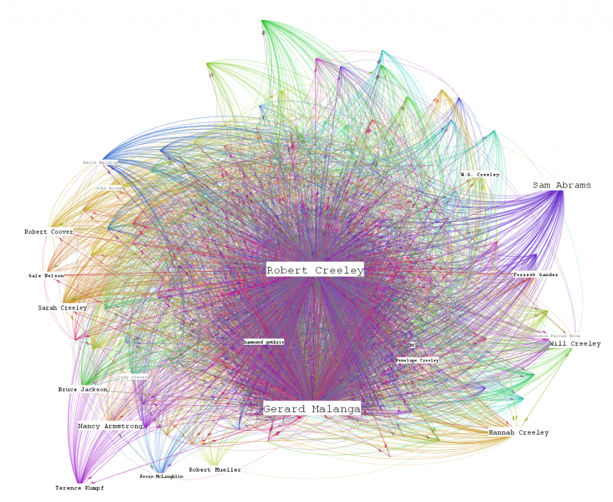
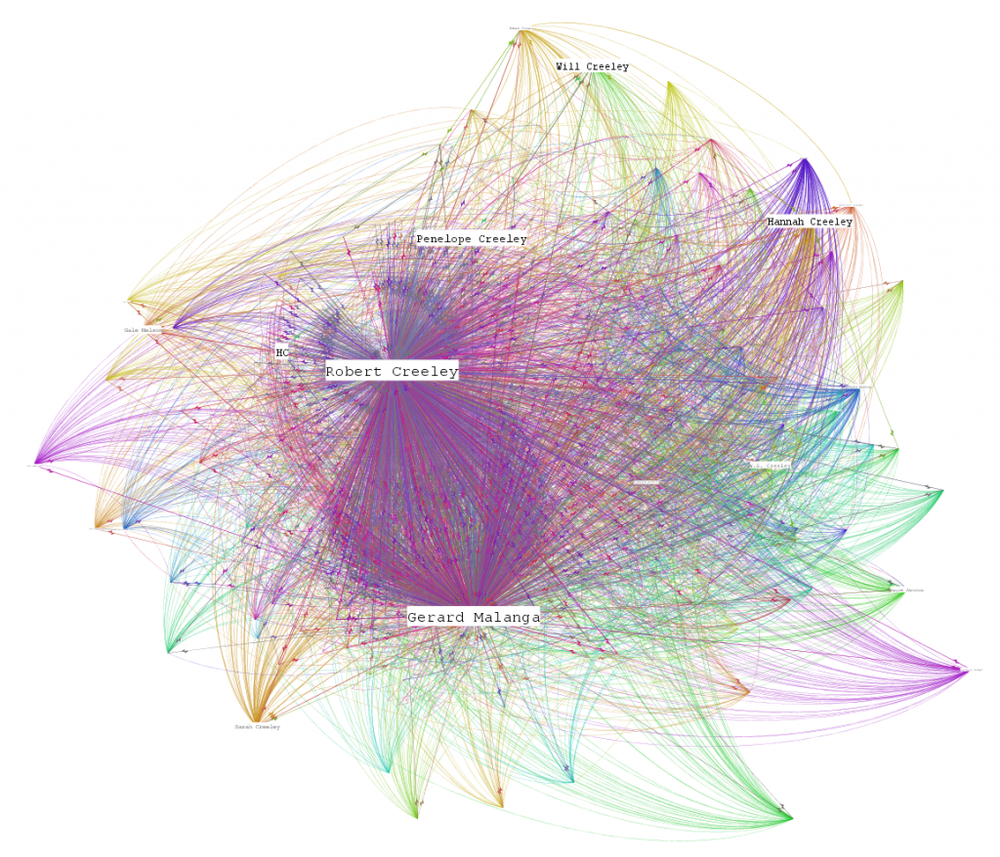

The project-oriented and person-oriented graphs of the most updated dataset of the Digital Humanities network at Stanford are up on the Digital Humanities at Stanford page. I played with some of the different algorithms, which made them messier. As usual, feedback is welcome.
And, because I need more attractive, esoteric visualizations, I present a pair of Robert Creeley drafts.


Creeley's network based on outgoing popularity.


Creeley's network based on incoming popularity.